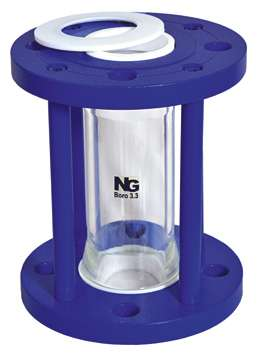
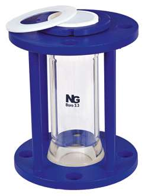
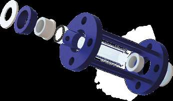

Tubular Sight Flow Indicators


Mild steel check-nut frame with PTFE T-bush, 15NB to 150NB
Check-nut framed tubular sight flow indicator with PTFE T-bushes — a cost-effective design for corrosive fluids with all wetted parts PTFE and glass. 15NB to 150NB.
| Product type | Check-nut tubular sight flow indicator |
|---|---|
| Frame material | MS, 1 off |
| T-bush | PTFE, 2 off |
| Glass tube | Borosilicate 3.3, 1 off |
| Gasket | PTFE, 4 off |
| Safety shield | Polycarbonate / acrylic, provided on request |
| Size range | 15NB to 150NB |
| Face to face | 192 mm to 200 mm standard; up to 1500 mm on request |
Product overview
Instead of separate flanges on tie rods, this model uses a one-piece mild steel frame with check nuts to clamp the glass tube. That reduces the part count and the cost, and makes adjustment on site straightforward.
PTFE T-bushes and gaskets keep the wetted path to PTFE and borosilicate glass only, so it handles corrosive fluids despite the mild steel frame. Custom face-to-face lengths up to 1500 mm are available, and repair and maintenance can be carried out at site.
Features
Benefits
Applications & industries
Technical data
Figures below are for this product only — every item in the range carries its own dimension table.
| Product type | Check-nut tubular sight flow indicator |
|---|---|
| Frame material | MS, 1 off |
| T-bush | PTFE, 2 off |
| Glass tube | Borosilicate 3.3, 1 off |
| Gasket | PTFE, 4 off |
| Safety shield | Polycarbonate / acrylic, provided on request |
| Size range | 15NB to 150NB |
| Face to face | 192 mm to 200 mm standard; up to 1500 mm on request |
| Wetted parts | PTFE and borosilicate glass only |
| Flange standard | ANSI B-16.5; BS-10 Table E, BS-10 Table F and PN 10 also available |
| Size | OD (±3) | PCD | H (No.) | H dia. | L (±3) |
|---|---|---|---|---|---|
| 15NB | 90 | 60 | 4 | 16 | 192 |
| 20NB | 100 | 70 | 4 | 16 | 192 |
| 25NB | 108 | 79 | 4 | 16 | 192 |
| 40NB | 127 | 98 | 4 | 16 | 192 |
| 50NB | 152 | 121 | 4 | 19 | 192 |
| 65NB | 180 | 140 | 4 | 19 | 192 |
| 80NB | 191 | 152 | 4 | 19 | 200 |
| 100NB | 229 | 191 | 8 | 19 | 200 |
| 150NB | 279 | 241 | 8 | 22 | 200 |
All dimensions in mm. Flange drilling to ANSI B-16.5; BS-10 Table E, BS-10 Table F and PN 10 drilling are also available — see the flange standards table.
| No. | Description | Qty. | Material |
|---|---|---|---|
| 1 | Frame | 1 | MS |
| 2 | T-bush | 2 | PTFE |
| 3 | Gasket | 4 | PTFE |
| 4 | Glass tube | 1 | Borosilicate 3.3 |
| 5 | Safety shield* | 1 | Polycarbonate / acrylic |
Exploded view
Item numbers match the material specification table above.

FAQ
A single mild steel frame that clamps the glass tube using check nuts, instead of two separate flanges drawn together on tie rods. Fewer parts, lower cost and easy site adjustment.
Yes — the PTFE T-bushes and gaskets keep the wetted path to PTFE and borosilicate glass only, which is why the catalogue describes it as a cost-effective design for corrosive fluids.
Enquiry
Send the bore, the media, the temperature and pressure, and the flange standard you work to. Drawings and custom sizes welcome.
Send your requirement — media, temperature, pressure, dimensions — and we'll recommend the right product or fabricate it.
Talk to an engineer